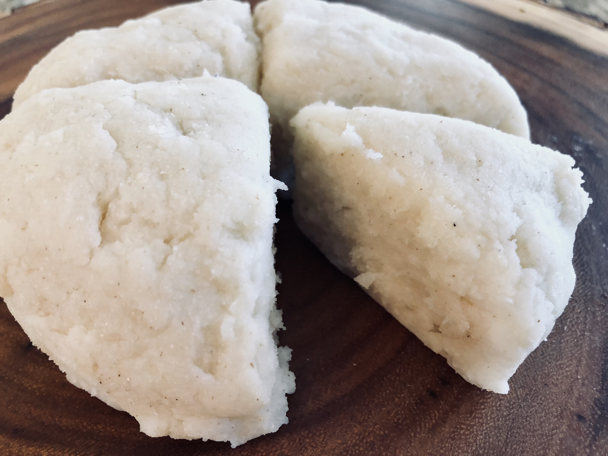

How to make ugali for your dish
Ingredients
- Maize flour(300g)
- Boiling water(500ml)
- Stirring stick
- Salt(Optional)
Steps
- Bring water to boil in sufuria
- Add salt to the water
- Pour flour slowly as your stir with the stirring stick
- Stir the mixture to consistent smoothness
- Simmer on low heat for 15 minutes
When it is solid and ready enough, place the sufuria upside down on a large enough plate and let the ugali settle.
Enjoy it with your favorite meat or vegetable dishes
Return to top
Go back to main page